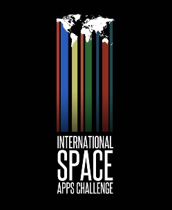

DORKBOT BANGALORE people doing strange things with electricity
Centre for Internet and Society
Metaculture Media Lab
The Metaculture Media Lab is a collaborative narrative that can only be written by many plural voices.
It envisions to create an open and alternative platform for discussion and exchange amongst a responsibly active citizenry coming from multi-disciplinary backgrounds.
In a communal spirit of 'learn, teach and share', it yearns to encourage innovation and culturally specific solutions to raise several important questions in the techno-socio-political arena.
GET INVOLVED >> email : dorkbotbangalore@dorkbot.org
COORDINATOR : Sharath Chandra Ram (Faculty, Srishti School of Art Design and Technology/ Researcher, Centre for Internet and Society)
Ongoing Research and Activites >> >>
Bridging the Online and the Offline:
The gray market in India is home to many low-cost innovations. Below is one such handheld device (now unavailable in the market due to patent restrictions) in the 'smartphone' category that apart from the usual bells and chimes, has an Analog TV receiver coupled with a Pico Projector at a sub $100 pricing.
With the Digital switchover in progress, the Analog TV band remains widely unused. Below is an implementation of a Pirate TV station, where we re-transmitted internet content onto the Analog TV spectrum. A classic example of bridging the offline and the online, such setups were common place in Civic Media interventons like in Egypt during the Arab Spring.
This setup was also displayed to the Members of Parliament at the Constitution Club of India, New Delhi.
Networked Consoles and Re-appropriations:
The digital TV switchover present us with an opportune limbo to intervene and find another use for Analog TV sets in domestic suburban and rural homes. We found one of those extinct portable mini analog TVs in the junkyard, and used it as a display for a networked console with the Raspberry-Pi. This presents a nice usecase for use in public spaces and for suburban and rural poor education using FOSS to replace dubious schemes such as the 'Akash' tablet.
Jan-March 2013
Had a few residents and visitiors over to the Lab :
1. Suresh Ghimere & friends from KHARKHANA ASIA, Katmandu's hackerspace, were resident at the lab for 4 days in March, on their way after smashing the Japanese team at the International Robotics Conference held at IIT Kanpur! We went on a wholesale shopping spree of an assortment of electronic essentials in Bangalore, that is now available to residents of Nepal. If anyone reading this is going to Katmandu, Nepal, you definitely need to hangout at http://www.karkhana.asia/ Hopefully the next Dorkbot Nepal.
2. Jan Gerber and Sebastien, creators of 0XDB.org and Pad.ma played around with the RASPBERRY PI. A few takehomes from the RASPBERRY PI JAM:
It has really lame onboard ethernet, and most WiFi signals are just too weak or noisy for it to synch up, so you'll need a Repeater router! So you're much better off with a direct Network cable. Struggled to get OpenFrameworks or Supercollider running on it. ESPEAK was a load of fun to have a speaking Raspberry Pi!
Ian Lesnet from Dangerous Prototypes visits Metaculture Media Lab to talk on Open Hardware (Nov 2012)
http://dangerousprototypes.com/
Thanks to Sudhar Muthu from the Computer Club of India for organizing this amazing session with Lesnet who was in a hurricane trip through Bangalore. The lab is soon to get some surprise freebies from Dangerous Protoypes and hopefully DP shall keep their promise.
Software Defined Radio Receiver (7Mhz) now Installed
Check out the inverted V dipole antenna (7Mhz) installed at the CIS lawn. Currently there is an Analog SDR receiver that Sharath Chandra Ram built under the guidance of VU2DEV from the veteran HAM radio community in Bangalore. It is great to tune into at about 5pm to 7pm, when most international stations are audible.
We now have an open call for digital signal processing along line of the GNURadio project and building SDRs on other bands.

Data Communication using low cost FM RF Devices
Sharath Chandra Ram mentored two budding young engineers, Rahil Bassim and Midhun Das, from the National Insitute of Technology, Calicut, who were resident hackers during their summer break at the lab from May to June 2012.
What entailed was the use of low cost personal FM Transmitters (like the ones available for Car Stereo), and common FM Recivers to implement low speed data transmission (a text based messaging system in our prototype) between digital devices like laptops and phones. We employed a simple AFSK (Audio Frequency Shift Keying) to enable data trans-reception. (What you see above is a portable FM receiver hooked up to the Mic input of a laptop. Another laptop's audio line-out was connected to an Fm transmitter)
Organic Digital : Algorithmic Composition and Jam
(Event organized as part of the LUCID project by PRAYAS ABHINAV : Research Fellow at LUCID, and Artist in Residence at Srishti School of Art, Design and Technology)
Prayas Abhinav has started this amazing Reading group called LUCID.Check it out here and join it if you already haven't : http://lucid.net.in/category/about/
The event 'Organic Digital' , focussed on the algorithmic composition of music and visuals using Chuck and Processing. Algorithmic composition has associations of being mechanic and predictable and noise-like. Alluding to a kind of bio-mimicry, how can digital music sound more organic? Uttam Grandhi played around with interactive video usingPprocessing, while Sharath Chandra tinkered with modulated digital output using the Anlaog ribbin synthesizer, Korg Montoron.Below is one of Prayas's attempt at Chuck :
International Space Apps Challenge (April 21st-22nd April 2012)

The International Space Apps Challenge was an international codeathon-style event that took place over a 48 hour period in cities on all seven continents – and in space – on the weekend of April 21-22, 2012. The event embraced collaborative problem solving with a goal of producing solutions to global challenges. The India venue, was @ Bangalore at our lab at The Centre for Internet & Society.
The event started off with a keynote delivered by Senior Professor Jayant Murthy from the Indian Institute of Astrophysics, on Open Data Space Research projects.
CONGRATULATIONS to 2 TEAM PROJECTS, whose APPS actually made it to the Global Top 10!
a) REST API for ISS LIVE data
b) KEPLER VISUALIZER
You can check the details of the above 2 projects and team members along with the rest of the International Apps here >>http://spaceappschallenge.org/
Braitenberg Vehicles Hack Session (Saturday April 14th 2012)
a) A short presentation about Braitenberg Vehicles (Ashwin Deshmukh and Sharath Chandra Ram) - The vehicle is based on a thought experiment by Italian cyberneticist, in his book : ''Vehicles: Experiments in Synthetic Psychology'' where 'vehicles' with simple sensorimotor capabilities display interesting life-like behaviour WITHOUT the need for internal memory, representation of the environment, or inference.
b) This was followed by a quick Hands-on-proactive-workshop, where a group of ten people, built some simple Braitenberg Vehicles, using common motors, wheels, and light sensors, and watched them play.
GET INVOLVED >> email : dorkbotbangalore@dorkbot.org
Coordinator : Sharath Chandra Ram (Faculty, Srishti School of Art Design and Technology/ Researcher, Centre for Internet and Society)
Please feel free to give a talk/hack/share your views/perform your piece/screen a film/display your inventions/install your art work/design/cook/study/learn/teach/solder/ideate/simply hang out/and suggest a myriad other things to do
Many thanks to:
The Centre for Internet and Society for hosting us at the centrally located and fabulous autonomous basement garage lab that exists for the Bangalore community.
Douglas Repetto (Founder of Dorkbot and Director of Research at Columbia University's Music Centre) for the global online platform to connect and share with other such communities.